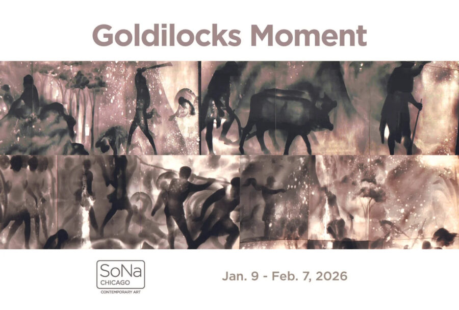

Goldilocks Moment: Artist Talk
Goldilocks Moment is a playful yet contemplative exhibition that explores themes in the popular childhood fairy tale such as those moments when things are “just right.” How do we find that moment? How do we keep it? What do we do when we lose it? The story changes when the Bears come home and disruption occurs. But who is the intruder in this story?
There is a concept in the field of astronomy called the Goldilocks zone, which is the exact distance from the sun where human life is possible. The artists are interested in the Goldilocks Moment as functional folklore and how the concept gets adopted by economists, scientists, and culture makers to describe a kind of moment, the right moment to leave, the moment to stay, the moment of creation, the moment of equilibrium, the “just right” state of being.
The artists are a collective of mostly University of Chicago graduates who have collaborated for many years. They have presented their work in unique spaces including the loading dock of a contemporary art museum and a friend’s garage as a drive-through exhibit during covid. Working together for them is an endeavor of joy that represents a Goldilocks Moment.
Each of the artists bring these larger questions into a personal realm that they explore through a variety of media. The artists use photos, film, sculptures, painting and performance to wrestle with ideas such as cultural change, how images can illuminate qualities of common experiences, and one’s comfort and identity in society. They realize that even the practice of creating can bring Goldilocks Moments. As one of the artists put it, In the field, my Goldilocks Moment is when I am so much in the moment of making an image, that I can forget having made it or ever having been there.
The artists in this exhibition are Anthony Adcock, dado, Marco G. Ferarri, Hannah Givler, Maymay Jumsai, Stacee Kalmanovsky, Paul G. Somers, and Jay Wolke.
The Goldilocks Moment opens at SoNa Chicago Contemporary Art on Friday, January 9 from 5-8 p.m.
The Reception for the show will be on Friday, January 16 from 6:00 – 9:00 p.m.
There will be an Artist Talk on Saturday, January 31 from 2-3:30 pm, where a panel of several of the artists will be interviewed by Molly O’Donnell.